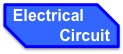
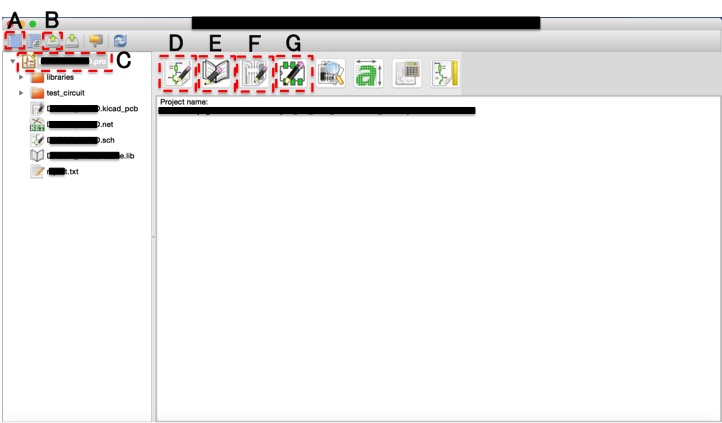

<!DOCTYPE HTML PUBLIC "-//W3C//DTD HTML 4.01//EN"
 "http://www.w3.org/TR/html4/frameset.dtd">

 <html>

 <head>
<meta http-equiv="Content-Type" content="text/html; charset=Shift_JIS">
<title>main page</title>
<link rel="stylesheet" href="css/EC.css" type="text/css">
</head>

<body>

<div id="header">
  
  </div>
</div>

<div id="navi">
  <ul>
    <li> <a href="../index.html">   </a></li>
    <li> <a href="../Linux/Linux.html">  </a></li>
    <li> <a href="../EC/EC.html">  </a></li>
    <li> <a href="../3DP/3DP.html">  </a></li>
    <li> <a href="../Othres/Others.html">  </a></li>
  </ul>
</div>

<div id="page_body">
<div id="content">
  <div id="navi_ec">
    <!--  -->
  <!-- <div class="navi_ec_txt"> -->
    <h1> Menu lists </h1>
    <h3> <li> How to Install Kicad </li> </h3>
    <h3> <li> Electrical Circuit Design with Kicad </li> </h3>
    <h5>  - Basic Instructions </h5>
    <h5>  - Create your project file </h5>
    <h5>  - Create a circuit diagram with "Eeschema" </h5>
    <h3> <li> Deigned Electrical Circuits </li> </h3>
    <h3> <li> kicad memorundom </li> </h3>
  <!-- </div> -->
  </div>

  <div id="main">
    <h1> Electrical Circuit Design with KiCad </h1>
    <div id="Line_1">
    
    </div>
    <h2> Basic Instructions </h2>
    <p> This page describes a basic instruction of kicad. </p>
    <p> kicad is an opensource sortware to develop a CAD model of an electrical circuit board.
        an electrical circuit CAD model would be created following procedure. </p>
    <p> 1. Create your project file. </p>
    <p> 2. Make a circuit diagram using "Eeschema". </p>
    <p> 3. Select a footprint of each component using "CvPcb". </p>
    <p> 4. Place each component using "Pcbnew". </p>
    <h2> Create your project file </h2>
    <p> When you click a kicad.exe file, the window shown in Fig.1 is opened. </p>
    
    <p> A. Create new project file </p>
    <p> B. Open an existed project file </p>
    <p> C. Lists of created files </p>
    <p> D. Run "Eeschema" </p>
    <p> E. Run "Schematic library editor" </p>
    <p> F. Run "Pcbnew" </p>
    <p> G. Run "Foot print editor" </p>
  </div>
  <!-- </div> -->
</div>
</div>

</body>
</html>
